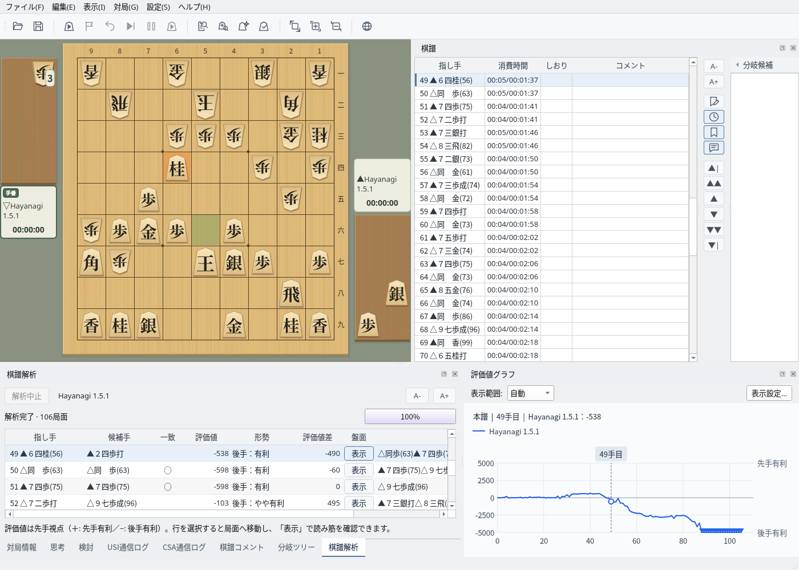

研究・解析
研究・解析
候補手は盤上の矢印で、
形勢は評価値グラフで
USIエンジンを登録すれば、任意の局面を検討モードで調べたり、棋譜全体を一括で解析したりできます。評価値グラフと解析結果の一覧から、形勢が動いた一手をすぐに見つけられます。
- 候補手は番号付きの矢印で表示。持駒を打つ手は駒台から伸びます
- 棋譜解析で各手の評価値・最善手との一致・評価値差を一覧表示
- 対局中もエンジンの最善手を矢印で確認。エンジン同士の対局では双方の思考を並べて表示
- 分岐ツリー・しおり・コメントで研究内容を整理

